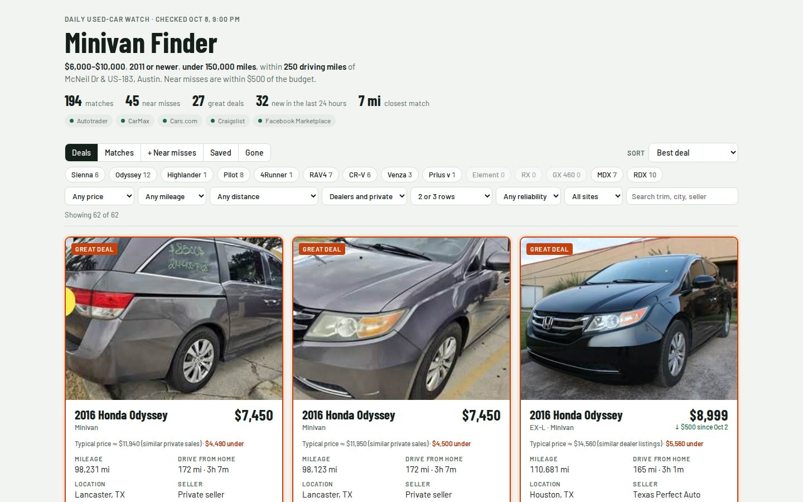
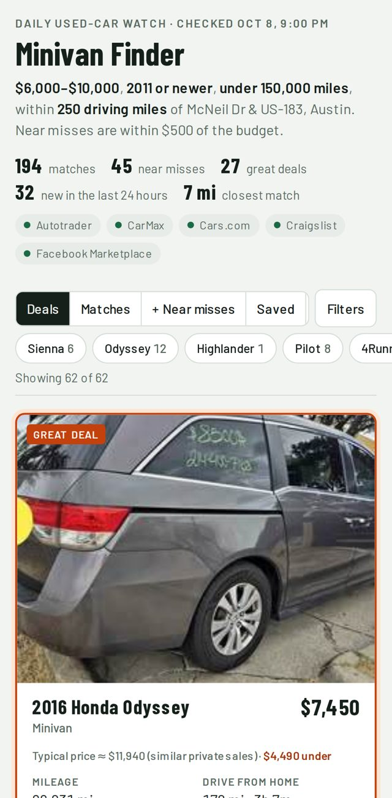
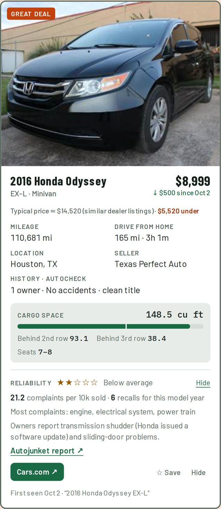
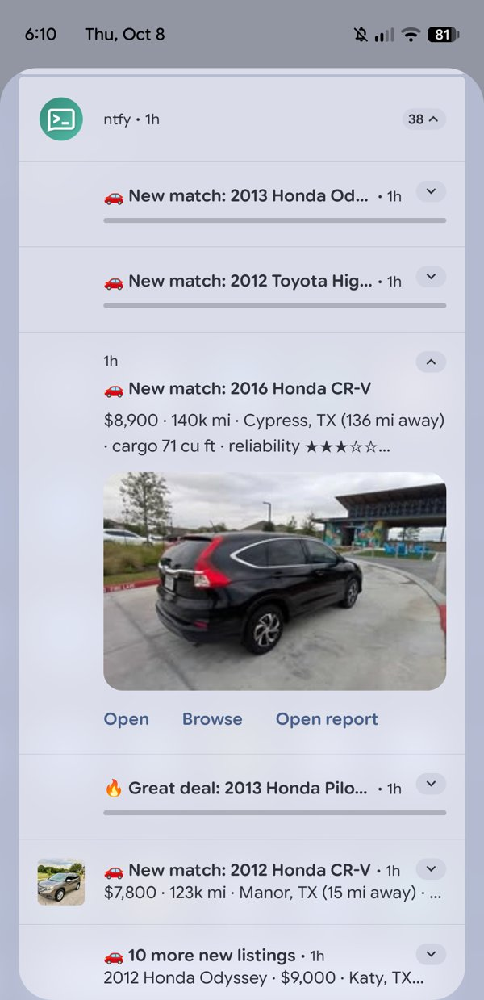

Show & tell · Claude Code
One evening of prompts turned into a scraper for 5 car sites, a deal-scoring model, phone alerts and a mobile report that rebuilds twice a day.
The starting point
There's no spec, schema, site list or design here. The goal, the constraints and an invitation to ask questions were enough.
What Claude needed from me, part 1
| Question | Options Claude offered | What I picked |
|---|---|---|
| Year / mileage "$8–10k usually means 2011–2015, 120–180k mi" | 2011+ under 160k (Rec.) · any year under 180k · 2015+ any mileage | Took the recommendation |
| Sources | CarMax · aggregators (Cars.com, CarGurus, Autotrader) "so I don't need to scrape individual dealer sites" · Craigslist · FB Marketplace "best effort, may break" | All four |
| Notifications | Email (Rec.) · ntfy.sh push · Pushover ($5) · Discord/Slack webhook | Overrode it: ntfy.sh |
| Publishing "A plain cron script can't publish to claude.ai on its own" | Cron calls claude -p (Rec.) · local HTML only · both | Took it, then replaced it with GitHub Pages an hour later |
Each option came with its tradeoff spelled out, like FB "actively blocks scraping" and Pushover "one-time $5". Picking took about a minute.
How the session actually went
Several of these were typed while Claude was still working. Claude Code queues them and folds them into the running task.
How it works
run_daily.sh only proceeds at 7 AM / 4 PM Chicago, which keeps the times right through daylight saving. Uses flock.curl_cffi (Chrome TLS fingerprint).git push to Pages. New listings → ntfy.| File | Lines | Job |
|---|---|---|
run.py | 399 | pipeline, filters, merge, price drops |
finder/sources.py | 372 | the 5 scrapers |
finder/report_template.html | 464 | report UI (vanilla JS, no framework) |
finder/deals.py | 130 | per-model price regression |
finder/reliability.py | 120 | NHTSA complaints → stars |
notify / geo / models / report / publish | 426 | the rest |
config.toml; the secret ntfy topic is in a git-ignored config.local.tomlHow Claude chose which sites to scrape
| Attempt (all within ~5 minutes) | Cars.com | CarMax | Autotrader | CarGurus |
|---|---|---|---|---|
Plain curl | 403 | 403 | "page unavailable" | 403 |
curl_cffi, Chrome TLS impersonation | 200 ✓ JSON in page | 403 | unavailable | 403 |
| Headless Chromium (Playwright) | – | Access Denied | unavailable | 403 |
| Patched stealth Chromium (patchright) | – | Access Denied | unavailable | 403 |
| "Is it our IP?" → residential Google Fiber, so no | So the block is the browser fingerprint, not the IP address | |||
| Camoufox (stealth Firefox) | – | 200 ✓ internal search API | 200 ✓ __NEXT_DATA__ | 403 → dropped |
Skipped the HTML and found the JSON API the site's own front end calls (sapi…/postings/search/full). One request covers every Texas area.
Works logged out. Search cards lack mileage, so it opens each new listing once for mileage, VIN and title status, then caches the result.
Individual dealer sites were already covered by the aggregators. CarGurus blocked everything. Edmunds (asked later) mostly duplicates Cars.com and Autotrader.
Decisions Claude made on its own
"Decent cargo space" became 10 models: Sienna, Odyssey, Highlander, Pilot, 4Runner, RAV4, CR-V, Venza, Prius v and Element, each with cargo specs per generation. For Lexus/Acura it skipped the ES/IS/NX/TL for lack of cargo room.
Cars up to $500 over budget are kept in their own tab. Sellers negotiate.
Uses OSRM driving miles and time from McNeil & 183, not straight-line distance. Geocodes and routes are cached in SQLite.
The same car on CarMax and Autotrader becomes one card with both links, matched by VIN.
At most 8 pushes per run, then a summary. When I changed the price range, it re-ran quietly so I wasn't flooded. "Too good to be true" listings never push.
"Salvage", "needs transmission" → a Check badge, capped at "good deal". It removed "sold as-is" from the list because "every private sale says it".
Before pushing to a public repo, it moved the ntfy topic into a git-ignored file: "Anyone who knew it could read your alerts."
Chose NHTSA complaints per 10k sold, because Consumer Reports and J.D. Power are paywalled and can't be republished. Airbag (Takata) complaints are excluded.
Window-sticker cards, a "Gone" tab for sold cars, Save/Hide stored per browser, and a cargo bar per car.
Self-correction
Result on that run: 17 great, 31 good, 10 suspect, 19 flagged. Nobody asked it to sanity-check the output.
# finder/deals.py (simplified) # per model, last 45 days of listings log(price) ~ b0 + b1 * (year - 2014) + b2 * miles / 100_000 + b3 * is_private_seller expected = exp(fit(listing)) if kbb_price: expected = kbb_price # Autotrader pct_under = 1 - price / expected if pct_under >= 0.40: label = "suspect" elif pct_under >= p90(candidates): "great" elif pct_under >= p75(candidates): "good"
The result



Views: Deals · Matches · Near misses · Saved · Gone. Filters: model, price, mileage, distance, seller type, rows, reliability, site, search. Live at petenelson.github.io/our-car-finder-report
Notifications

Pushback
<meta viewport> line fixed it.Lessons
claude -p run. It was swapped for git push to Pages.Takeaways
Only I could do
! gh auth loginWhat worked